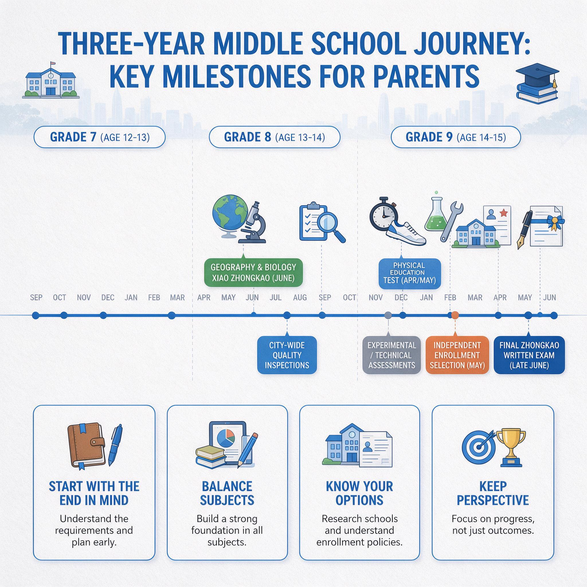

第 19 章
家长的续航能力
俯瞰深圳的家庭教育图景，每年十月至十二月间总有一道无形的分水岭悄然显现。当开学的新鲜感逐渐褪色，月考与期中考试的成绩相继落定，家长群的议题便从“适应与否”转向“补习班选择”。与此同时，职场步入年终冲刺，加班频增而年假难休——学校的考核节奏与职场的年终节奏，在同一个屋檐下叠加共振。这双重压力的受力点往往落在某个家庭成员有限的精力储备上，可能是母亲，或是父亲，偶尔是祖辈。无论具体承担者是谁，其精力状态将成为前十八章所述方法能否持续运转的关键支点。
这个判断基于一个反复出现却被反复忽视的事实：家长辅导体系的崩溃，很少发生在方法最糟糕的家庭，而更多发生在方法原本执行得不错的家庭。一个严格执行错题本制度、每周进行英语听写、按月调整学习计划的家庭，在某个月份突然中断了所有动作，原因不是发现了更好的方法，也不是孩子突然抗拒配合，而是执行这一切的那个人——那个每天下班后检查作业、周末接送补习班、深夜对照答案的人——生病了，或者工作出现了危机，或者仅仅是累到无法再保持同样的注意力水平。这个人的精力不是被某一个重大事件一次性击穿的，而是被日常的、琐碎的、不被计入任何统计的微小消耗逐日削薄的。
这些微小消耗的第一个类别，可以称为隐形劳动。这个词在家庭社会学研究中被用来描述那些维持家庭系统运转却从未被列入“待办事项”的认知工作。在陪考场景中，隐形劳动的清单比一般家庭更长也更密集。它开始于每天早晨六点半到七点之间，家长手机屏幕上弹出一条年级群通知，内容可能是提醒缴纳某项费用、确认参加某个活动、或者告知某个科目的作业提交方式发生了变化。
这条通知本身只需要几秒钟就能读完，但它触发的认知链条却远不止这几秒。家长需要判断这条通知是否与自己相关，如果相关，需要在什么时间之前完成什么操作，操作入口在哪个应用程序的哪一层菜单里，密码是否还记得，如果忘记密码需要通过什么流程重置。
这些判断在成人的日常工作中属于常规事务，但它们的密度在陪考场景中被成倍放大：不同科目使用不同的作业平台，不同老师偏好不同的沟通工具，不同班级有不同的接龙格式。家长的大脑需要在多个系统之间不断切换，每一次切换都在消耗注意力资源。
隐形劳动的第二层涉及信息的翻译和传递。孩子放学回家，书包往沙发上一扔，家长问“今天怎么样”，孩子答“还行”。这个“还行”是一个需要解码的信号。它可能意味着“今天没什么特别的事”，也可能意味着“今天数学小测没及格但我现在不想说”，还可能意味着“今天在学校和同学闹了矛盾但与学习无关”。
家长需要根据孩子的语气、表情、回家时间、以及最近几天的学习状态来判断这个“还行”的真实含义，并决定是否追问、何时追问、以什么方式追问。这个解码过程发生在家长自己的大脑里，通常只需要几秒钟，但它调用了大量的背景信息存储和情绪感知能力。如果解码错误——比如把“不想说”误解为“没事”而错过了干预时机——后续的修复成本将成倍增加。如果解码正确但追问的时机和方式不当，可能触发抵触情绪，同样增加后续沟通的难度。
隐形劳动的第三层是跨角色协调。孩子的学习涉及多个成年人：学校老师、补习班老师、配偶、祖辈、可能还有家教。每个角色掌握着孩子学习状态的一部分信息，这些信息需要被汇总、校准和传递。数学老师知道孩子课堂表现但不知道孩子在家做作业的效率；补习班老师知道孩子每周两小时的表现但不知道学校进度；配偶可能负责周末接送但不了解日常作业细节；祖辈可能负责做饭和接送但不了解学习内容。
家长需要在这些角色之间充当信息枢纽，确保每个人得到的版本既准确又不会引发不必要的焦虑。告诉祖辈“孩子这次数学没考好”可能引发过度关注和反复询问，不告诉又可能在祖辈问起成绩时陷入被动。这种协调不是一次性的决策，而是每天、每周都在进行的动态平衡。
这些隐形劳动的共同特征是不被看见。家长可以清晰地说出“我今天给孩子讲了四十分钟数学题”，但很难说出“我今天在处理与孩子学习相关的各种信息上花了多少认知资源”。当这种消耗日复一日地累积，家长坐到孩子书桌旁准备开始辅导时，他的注意力储备可能已经消耗过半。此时，一道讲了两遍还错的数学题、一个书写潦草的英语单词、一句不耐烦的回应，都可能触发远超出事件本身的情绪反应。家长自己往往意识不到这种反应的真正来源——他以为是孩子的态度激怒了自己，实际上是他已经连续数周没有获得充分的认知休息，情绪阈值已经降到了危险的低位。
这就引出了第二重消耗源：情绪劳动。这个概念最初由社会学家阿莉·霍克希尔德在二十世纪七十年代提出，用来描述服务行业工作者需要管理自己和他人的情感以完成工作职责的现象。空乘人员需要在面对无礼乘客时保持微笑，收债员需要在面对欠债者的哀求时保持冷漠——这些都不是自然发生的情绪状态，而是经过刻意管理后展示出来的“情绪表演”。霍克希尔德区分了两种表演方式：表面扮演是压抑真实感受以展示符合要求的情绪，深层扮演是主动调整自己的内在感受以匹配外部期待。两种方式都消耗心理能量。
陪考家长同时进行着这两种表演，而且他们的表演舞台与生活空间完全重合，没有下台的时间。当孩子拿着一份低于预期的成绩单回家时，家长内心涌起的可能是失望、焦虑、甚至是愤怒——这些情绪真实而强烈。但家长知道，直接表达这些情绪无助于解决问题，甚至可能让孩子关闭沟通的通道。
于是家长需要压抑第一反应，展示出“我们一起来看看问题出在哪里”的稳定态度。这是表面扮演。更消耗的是深层扮演：家长在白天的工作中已经承受了一整天的压力——被上级催促、被客户抱怨、被同事误解——晚上回到家，需要把这些情绪全部搁置，调动内在的耐心和鼓励，进入“辅导者”的角色。这不是简单的表情管理，而是需要从内部说服自己切换状态。每一次切换都是一次心理能量的支出。
情绪劳动在陪考场景中的特殊困难在于，家长缺乏释放真实情绪的出口。在职场中，同事之间可以互相抱怨，下班后角色可以切换，周末可以休息。
但陪考家长的角色几乎没有切换的间隙。白天在单位处理完工作压力，晚上回家要承接孩子的学习压力；刚在电话里和客户争执完，转身要在孩子面前表现出耐心和信心。焦虑不断累积却没有排出机制，疲惫持续加重却没有缓冲空间。当这个封闭的情绪容器最终溢出时，辅导现场就从知识传递的空间变成了压力转移的空间。
家长自己未必意识到这个过程正在发生：他只是觉得今晚孩子特别不配合，那道题明明讲过为什么就是记不住。实际上，是他的情绪容器已经满了，孩子的任何一点不完美都成了刺破容器最后一层薄膜的针尖。溢出的不是辅导，而是指责、失望和疲惫。孩子感受到的也不是知识讲解，而是一个情绪不稳定的成年人施加的压力。辅导效果在这一刻已经不重要了，重要的是亲子关系在这场情绪转移中受到了怎样的磨损。
心理学中的情绪传染研究为这一过程提供了机制层面的解释。研究发现，情绪状态可以通过面部表情、语气、语速、身体姿态等非语言渠道在人际间传递，即使交流双方完全没有讨论情绪话题。一个内心焦虑但试图掩饰焦虑的家长，其焦虑仍然会通过这些渠道泄漏出去。
孩子接收到的不是家长试图传递的“这道题的解题思路是这样的”，而是一个复合信号：解题方法加上压抑的紧张感。孩子对后者的敏感程度往往超过前者，因为他们与家长相处的时间足够长，对家长的情绪波动有着本能的识别能力。结果是，家长付出了双倍的情绪劳动——既要管理自己的焦虑，又要应对孩子因为感受到焦虑而产生的退缩或对抗——而辅导的知识传递效率反而在下降。
第三重消耗源来自决策。社会心理学家罗伊·鲍迈斯特在二十世纪九十年代通过一系列实验提出了一个影响深远的理论：人类的自我控制和决策能力依赖于一种有限的、可耗尽的认知资源。他的研究团队让被试者在一个房间里等待，房间里放着刚烤好的巧克力饼干和一碗萝卜。一组被试者可以吃饼干，另一组只能吃萝卜。之后两组被试者都被要求解决一道实际上无解的几何题。结果发现，那些在吃萝卜时抵抗了饼干诱惑的被试者，在解题任务中放弃得更快。
这个实验以及后续的大量重复研究指向同一个结论：每一次自我控制和每一个需要权衡的选择，都在消耗同一池有限的资源。当资源耗尽时，人们要么做出冲动的决定，要么回避做出任何决定。
陪考家长是决策疲劳的高危人群，因为他们在陪考这件事上面临的选择密度和选择难度都远超日常生活。从七年级入学开始，决策链条几乎从不中断：要不要买那套口碑很好的教辅？买了之后要不要全部做完还是选做？孩子说数学老师讲得太快听不懂，是找老师沟通还是自己在家补？如果自己补，用哪本教材？如果找老师沟通，用什么方式说才不至于让老师觉得被冒犯？期中考试成绩下滑，是继续当前的学习节奏还是调整？调整的话，是增加练习量还是更换学习方法？要不要报补习班？报哪一科？报大班还是一对一？选了机构之后，试听课的老师孩子不喜欢，是换老师还是换机构？
这些选择中的每一个都涉及不确定性和后果评估。家长需要搜集信息、比较选项、预测效果，而做出这些选择的时间窗口通常不是在清醒的早晨，而是在已经工作了一整天之后的晚上。晚上九点半，孩子做完作业去洗澡了，家长坐在电脑前打开两个补习机构的网页，比较师资背景、课程大纲、收费标准和上课地点。此时，家长当天的工作疲劳还在，隐形劳动和情绪劳动的消耗已经发生，决策资源所剩无几。在这种状态下做出的选择，更可能基于最表面的特征——哪个离家近、哪个朋友推荐过、哪个的广告文案更打动人心——而非基于系统性的比较分析。
决策疲劳在陪考中最常见的后果有两种形态。一种是过度反应：一次月考成绩不理想，立刻决定全面推翻当前的学习安排，增加大量新的任务——再买一套卷子、再加一个补习班、再增加每天半小时的听力训练。这些决定在做出时带着一种“必须做点什么”的紧迫感，但它们往往缺乏对精力和时间总量的计算。
新增的任务挤占了原有的休息和缓冲空间，导致孩子和家长都更加疲惫，下一次考试成绩可能更差，从而触发又一轮的过度反应。另一种形态是决策回避：面对需要判断的信号——比如孩子连续三周的数学作业错误率在上升——拖延不做任何决定，告诉自己“再看看”“可能只是暂时的”。这种回避的代价是，当问题最终变得不可忽视时，已经错过了最低成本的干预窗口。
这三重消耗源不是各自独立运作的。它们相互叠加，彼此放大。隐形劳动占据认知带宽，使得情绪劳动所需的自我监控能力下降——一个大脑已经被各种截止日期和待办事项占满的人，更难以在情绪被触发时保持克制。情绪劳动的积累增加了日常摩擦，制造更多需要临时决策的突发情况——一次辅导中的情绪爆发可能导致孩子拒绝继续做作业，家长必须当场决定是坚持还是让步。
决策疲劳导致糟糕的选择，糟糕的选择带来更多后续问题——一个仓促报名的补习班可能打乱整个周末的节奏，增加接送的时间和精力成本，进一步加重隐形劳动的负担。这个叠加循环解释了为什么很多家长的辅导状态不是线性下降的，而是在某个时间点出现断崖式的崩塌。不是某一个具体事件击垮了他们，而是三重消耗的叠加在某个临界点突破了精力的承载上限。
这个分析指向一个必须被正面接受的结论：家长需要像设计孩子的学习节奏一样，设计自己的恢复节奏。这不是一个关于“如何更高效利用时间”的技巧问题，而是一个关于“辅导体系能否持续运转”的结构问题。一个没有恢复机制的系统是不可持续的，无论它的方法设计得多么精妙。而家长自己，就是这个系统中最核心也最脆弱的那一个组件。
设计恢复节奏的第一步，是设定辅导的硬边界。硬边界不是模糊的自我承诺——“我要尽量早点休息”“周末争取给自己留点时间”——而是具体的、不可在日常操作中随意修改的时间规则。最基础的一条硬边界是：晚间辅导在固定的时间点结束，无论作业是否完成、无论还有多少道错题没有讲解。这个时间点可以根据家庭的实际情况设定——十点、十点半、甚至九点半——但一旦设定，就必须被当作一条不可协商的底线来遵守。
这条规则的心理功能不在于它实际提供了多少分钟的休息时间，而在于它建立了精力的止损线。没有止损线的消耗是无限的，而知道自己必须在某个时间点停止辅导，这个预期本身就降低了整个晚间辅导过程中的焦虑水平。它把辅导从一场不知道何时结束的消耗战，变成了一段有明确边界的时间区块。
硬边界的设定必然面临现实的挑战。有些晚上，孩子的作业确实做不完，或者确实有一道关键的错题需要当天讲解。这些情况会出现，但它们的处理方式不应该是取消边界，而是建立例外处理机制。例外机制的关键在于，它把“是否延长”的决定权从紧急感手中夺回，交还给规则。
具体操作可以是：如果孩子确实需要延长辅导时间，必须在硬边界到达之前的半小时主动提出请求，说明延长的具体原因和预计时长。这个动作本身就是一个筛选机制——如果孩子不愿意或想不起来提前提出请求，说明延长的必要性可能并不像家长自己感觉的那么强。
更重要的是，这个机制改变了“延长”的性质：它不是家长在疲惫中被动地、无限期地继续陪下去，而是基于明确的请求和预期进行的有限延长。紧急感是一个永不枯竭的催促来源——永远有做不完的题、永远有可以再讲一遍的知识点——如果由它来支配边界，边界就不存在。
设计恢复节奏的第二步，是建立家长之间的支持结构。这里说的支持结构不是指简单的互相倾诉或信息交换，虽然这些也有其价值。它的核心功能是打破辅导场景的封闭性。一个封闭的辅导空间——每天晚上，同一个房间，同样的两个人，面对同样的作业和错题——会逐渐固化互动模式，累积情绪张力。家长和孩子在这种封闭空间中，彼此的行为会变得越来越可预测，也越来越容易触发对方的自动化反应。打破这种封闭性的最直接方式，是引入其他家庭。
在深圳的陪考实践中，已经出现了一些自发的协作形式。三四个住在邻近社区的家庭组成学习小组，每周固定一个晚上让孩子在一起完成部分作业，家长轮流值守。这种安排的价值不仅在于分担了辅导时间——值守的那个晚上，其他家长可以休息或处理自己的事务——更在于它改变了辅导场景的生态。
当有其他同龄人在场时，孩子的行为会发生调整，他们更倾向于在同龄人面前表现出自主和负责的一面。当有其他成年人在场时，家长也可以观察到其他孩子的学习状态，获得一个更客观的参照系：原来别人家的孩子也会犯类似的错误，原来那道题换个讲法确实更容易理解。这种暴露本身就是一种情绪压力的释放。焦虑在封闭空间中会被放大，在开放空间中会被稀释。
对于没有条件组成线下协作网络的家长，线上社群可以承担部分功能，但需要警惕一种常见的陷阱。很多家长群最终变成了焦虑的共振腔：一个人分享焦虑，引发更多人的焦虑回应，群内的信息流从“怎么解决这个问题”转向“这个问题有多可怕”。
有效的支持结构应当以解决问题为导向，而不是以确认感受为导向。它的健康运作方式可以是：成员定期交换各自在辅导中遇到的具体困难，每人提出一个自己尝试过的解决方案，无论成功与否；分享各自发现的可靠资源——经过实际使用验证的教辅、公开可查的教研材料、官方发布的政策解读——而不是互相转发未经核验的提分秘籍；在有人情绪崩溃时提供倾听，但倾听之后回到“接下来打算怎么做”的具体讨论。这种结构的功能不是消除焦虑——在深圳中考的竞争强度下，焦虑不可能被消除——而是防止焦虑在封闭的个体内部不断循环放大，最终压垮执行功能。

设计恢复节奏的第三步，是接受“足够好”而非“全科全能”的自我标准。这个建议容易被误解为降低要求或自我安慰，但它实际上基于前文已经揭示的认知资源有限性。如果家长的精力是一个有限的资源池，那么资源分配就必须有优先级。试图在所有科目上做到同等深度的介入，结果往往不是各科均衡推进，而是家长在所有科目上都停留在表面，且自身迅速耗尽。
“足够好”的标准在七年级陪考场景中有一个可操作的定义：在语数英三科中，选择一科作为家长深度介入的对象，其余两科维持在信息跟踪层面。深度介入意味着对这一科执行第18章所描述的最小可行集中的全部动作：每天记录作业完成情况和错误类型，每周回顾累积的数据，每次考试后与孩子进行结构化的对话，每学期与老师进行一次校准沟通，并在必要时亲自讲解错题。信息跟踪则意味着只做记录和定期检查，不介入具体讲解，把发现的异常信号反馈给学校老师或补习机构，由专业人员处理。
这个标准的依据是一个七年级家庭的实际时间预算：一个工作日的晚间，家长能够用于辅导的有效时间通常不超过九十分钟。在这九十分钟里，如果要覆盖三科的作业检查、错题讲解和次日预习，每科平均只有三十分钟。三十分钟只够做最浅层的检查，无法进行任何有深度的诊断和讲解。把同样九十分钟集中投入一科，则可以完成从检查到诊断到针对性讲解的完整闭环。
选择哪一科作为深度介入的对象，取决于两个因素：孩子的薄弱环节和家长自身的知识储备。但更重要的选择原则是：优先选择知识结构连续性最强的那一科。在七年级的语数英三科中，数学和英语的知识结构连续性最强——前面的漏洞会直接影响后续内容的理解。语文的连续性相对较弱，阅读和写作能力的积累更依赖长期的量的积累而非短期的知识点衔接。因此，如果孩子的数学或英语存在明显薄弱，优先选择其中一科作为深度介入对象，是在有限精力下边际效益最高的策略。如果孩子在数学和英语上都没有明显薄弱，那么选择家长自己最熟悉的那一科，可以减少辅导过程中的认知负荷和情绪摩擦。
接受“足够好”的标准还意味着接受辅导过程中的不完美。有些晚上，听写会漏掉几个词没有复听；有些周末，错题本的整理会滞后一周；有些月考之后，对话没有做到第18章建议的二十分钟，只进行了匆匆的五分钟。这些情况会发生，它们是常态而非例外。
关键不在于避免每一次不完美，而在于不因为一次不完美而放弃整个系统。一个滞后一周的错题本仍然比一个被放弃的错题本有价值，它至少保留了此前累积的大部分信息。一次五分钟的对话仍然比一次没有发生的对话提供了更多关于孩子学习状态的线索。辅导体系的韧性，不在于它从不中断，而在于中断之后能够恢复。而恢复的前提，是家长没有因为一次中断而陷入自我否定——自我否定本身又构成新的情绪劳动，进一步消耗恢复所需的精力。
这三项续航策略——设定硬边界以止损，建立支持结构以打破封闭，接受“足够好”以降低自我消耗——共同指向一个判断：家长是辅导体系中需要被管理的变量，而非取之不尽的资源。这个判断与第4章“精力有限而需求无限”的讨论形成呼应，但推进到了更具体的操作层面。第4章处理的是结构性矛盾——家长的时间精力与孩子的学习需求之间存在不可消除的张力，这是陪考这件事的底层约束。本章处理的则是在承认这一约束的前提下，家长如何通过管理自己的精力来延长辅导体系的有效运转时间，防止体系因为执行者的耗竭而崩溃。
但本章的分析也必然抵达一个边界。个人的续航策略——无论设计得多么精细——都只能在一个有限的范围内起作用。它可以帮助家长在七年级到八年级的漫长拉锯中保持相对稳定的状态，减少因精力耗竭而导致的辅导现场崩溃，但它无法回答一个更根本的问题：所有这些努力，最终是为了什么。
如果目标是撑到中考，那么中考之后呢。如果家长在陪考过程中把自己的精力管理做到了极致，设定了清晰的边界，建立了有效的支持结构，接受了“足够好”的标准，但孩子在中考之后仍然不具备独立规划和执行学习任务的能力，这套辅导体系的意义就需要被重新审视。如果家长通过情绪劳动的管理修复了与孩子的关系，减少了辅导现场的摩擦，但这份修复仅仅维持到中考结束，之后因为共同目标消失而重新陷入疏离，那么“关系比分数更底层”这一全书核心论断就只实现了一半。
这个边界并非对本章策略的否定，而是对它的定位。续航策略是手段，不是目的。它们服务于一个更大的目标：让家长有足够的精力稳定地执行最小可行集，从而在整个初中阶段持续观察、校准和支持孩子的学习节奏。但这个更大目标的最终检验标准，不是中考成绩单上的数字——尽管那是所有人都无法忽视的数字——而是中考结束之后，孩子是否从这套体系中获得了独立面对学习任务的能力，以及家长与孩子的关系是否因为这段共同经历而变得更加健康而非更加紧张。
家长尝试设定硬边界，却在某个晚上因为孩子的一道错题而破例；尝试建立支持结构，却发现能真正形成稳定协作的家庭寥寥无几；尝试接受“足够好”，却在看到别人家孩子的成绩时重新陷入自我怀疑——这些矛盾不会因为本章的策略而消失。它们将在整个陪考过程中持续存在，并在中考结束的那个夏天，汇入一个更深远的问题：这场漫长的陪跑，究竟在孩子和家长各自的生命中留下了什么。